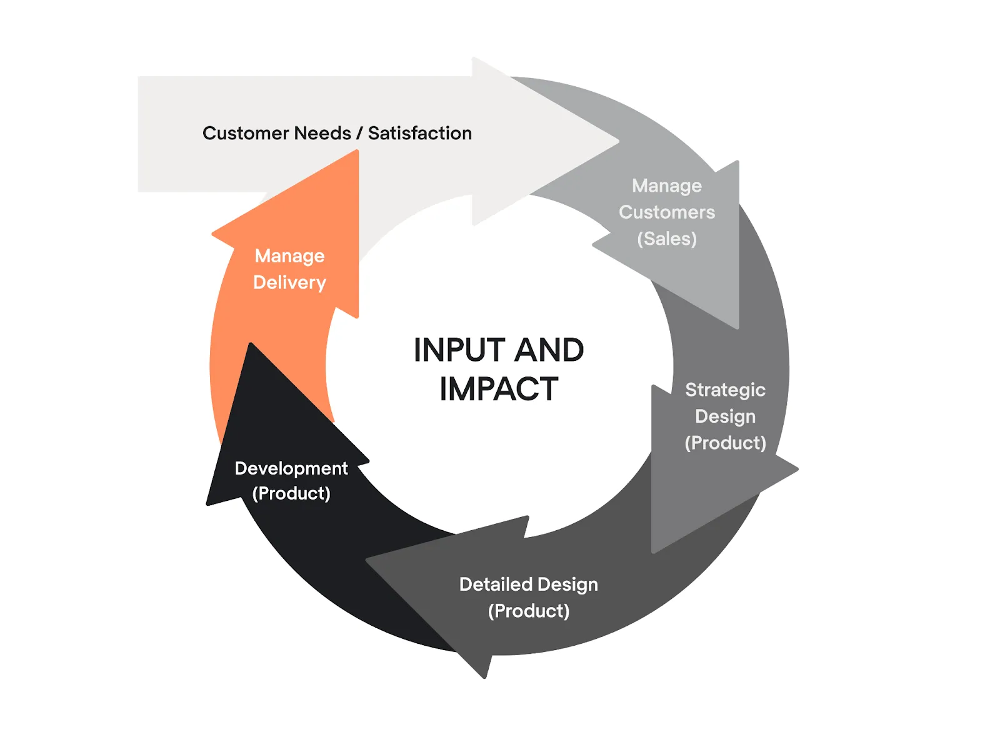

Dseign Driven Development on tarkvaraarenduse lähenemine,
kus disain on esikohal. Enne funktsioonide väljatöötamist luuakse
ja testitakse madala täpsusega prototüüp.
DDD muudab tooted kasutajasõbralikuks ja intuitiivseks,
integreerides disainipõhimõtted
kogu arendusprotsessi vältel alates ideest kuni teostuseni.

Eelised
Enne koodi sisestamist saab rakenduse välimust ja olemust viimistleda
Kasutajate lood on täpsemad ja neid on lihtsam kirjutada
Arendajad ei pea tegutsema UI/UX disaineritena
Rakenduse loomisel saab kulusid vähendada
Puudused
Kujundused ei pruugi alati olla täiesti koodisõbralikud
Ääreümbrised võivad siiski kuvada
Keeruline liitumisprotsess
Reaalajas rakendus võib minna kujundusest erinevas suunas
Case Vahendi kasutus
Figma
Figmat kasutatakse tavaliselt:
vVeebisaitide ja mobiilirakenduste jaoks staatilised traatraamide ja maketide tegemine
interaktiivseid prototüüpide Loomine veebistaide jaoks
ja haldamiseks korduvkasutatavate komponentide ja stiilidega disainisüsteeme